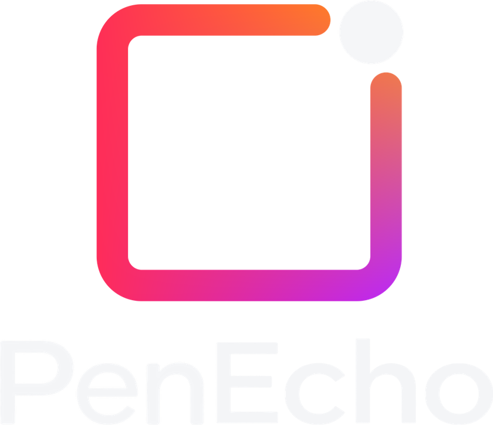
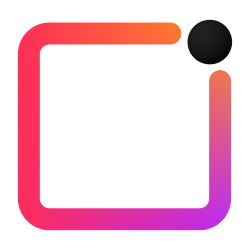
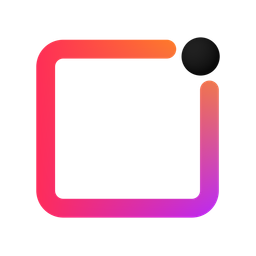
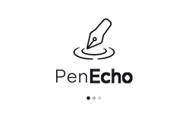

<!doctype html>
<html lang="zh-CN">
<meta charset="utf-8">
<meta name="viewport" content="width=device-width,initial-scale=1">
<title>PenEcho 标识验收</title>
<style>
*{box-sizing:border-box}body{margin:0;padding:36px;background:#f5f5f7;color:#202124;font:14px/1.6 system-ui,sans-serif}main{max-width:1080px;margin:auto}h1{font-size:24px;font-weight:500;margin:0 0 8px}h2{font-size:16px;font-weight:500;margin:24px 0 10px}p{margin:0;color:#64666a}.logos,.icons{display:grid;gap:16px;grid-template-columns:repeat(2,minmax(0,1fr))}.icons{grid-template-columns:repeat(3,minmax(0,1fr))}.surface{display:grid;justify-items:center;align-content:center;gap:16px;background:white;padding:24px;min-height:210px;border-radius:12px}.dark{background:#202124;color:#f5f6f8}.surface img{display:block;max-width:100%;object-fit:contain}.wordmark{width:280px;height:auto}.sizes{display:flex;gap:20px;align-items:center;height:72px}.label{font-size:12px;color:inherit;opacity:.75}.pair{display:grid;grid-template-columns:1fr 1fr;gap:8px;width:100%}.mini{display:grid;place-items:center;padding:18px;border-radius:8px;background:#f5f5f7}.mini.dark{background:#202124}.mini img{width:40px;height:40px}@media(max-width:740px){body{padding:20px}.logos,.icons{grid-template-columns:1fr}}
</style>
<main>
<h1>PenEcho · 标识验收</h1>
<p>用户提供的最终透明 PNG；保留新版圆点、渐变与字形，根据显示位置处理背景。</p>
<h2>README · 透明 WebP，显示宽度 280 px</h2>
<div class="logos">
  <section class="surface"><span class="label">浅色页面：原始深色文字</span></section>
  <section class="surface dark"><span class="label">深色页面：自动切换浅色文字与圆点</span></section>
</div>
<h2>浏览器页签与应用栏 · 只使用图形</h2>
<div class="icons">
  <section class="surface"><div class="pair"><div class="mini"></div><div class="mini dark"></div></div><span class="label">Windows：透明背景</span></section>
  <section class="surface"><div class="pair"><div class="mini"></div><div class="mini dark"></div></div><span class="label">macOS：白色圆角底板，外角透明</span></section>
  <section class="surface"><div class="pair"><div class="mini"></div><div class="mini dark"></div></div><span class="label">页签 / Cloud 应用图标：白色圆角底板</span></section>
</div>
<h2>安装动画 · 完整 Logo</h2>
<div class="logos">
  <section class="surface"><span class="label">Windows 安装动画 · 白底</span></section>
</div>
</main>
</html>
